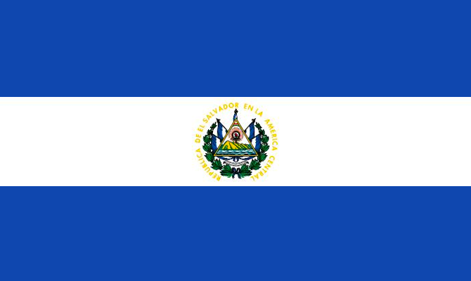
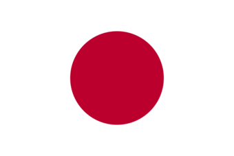
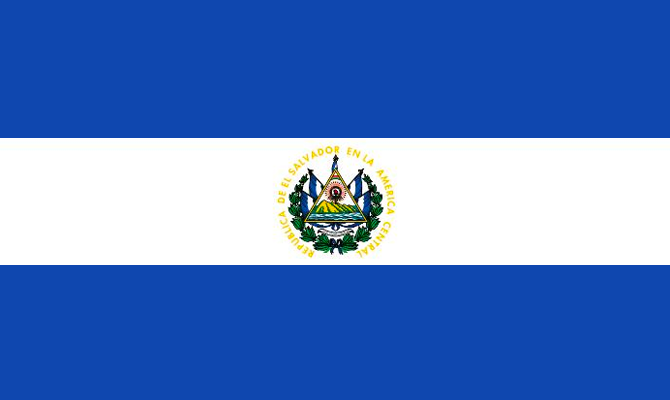
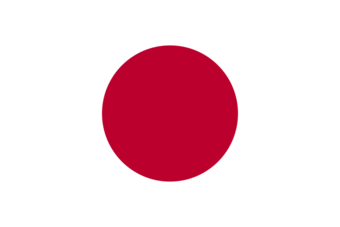

Costa Rica es un país de América Central con una geografía accidentada, que incluye bosques tropicales y costas en el Caribe y el Pacífico.
Costa Rica es conocida por sus playas, sus volcanes y su biodiversidad. Aproximadamente un cuarto de su área corresponde a selvas protegidas repletas de fauna.
El Salvador
El Salvador es una pequeña nación de América Central. Es conocida por sus playas en el océano Pacífico, los sitios de surf y el paisaje montañoso.
Su Ruta de las Flores es un camino serpenteante que pasa por plantaciones de café, bosques tropicales con cascadas
Japón
Japón es una nación insular del océano Pacífico con densas ciudades, palacios imperiales, parques nacionales montañosos y miles de santuarios y templos.
 


